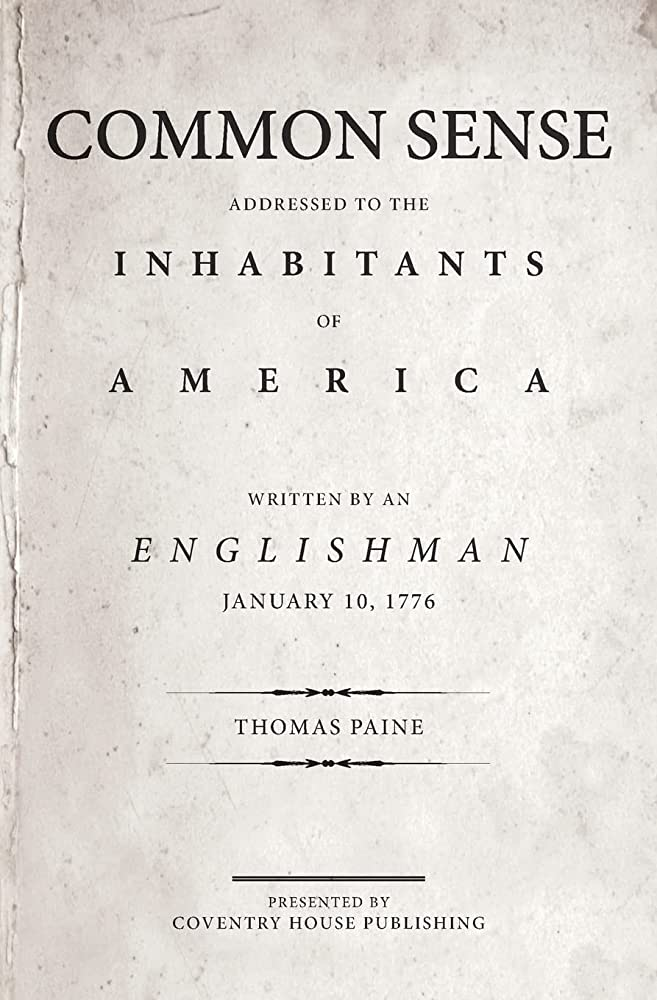

What did Common Sense do?
- Promoted ideas of American exceptionalism
- Promoted ideas of the need to form a new nation
- Pressured leaders to declare independence

|
Alternative Outcome?
- Support for the Revolution would not have been gathered
- Delayed the American Revolution and Independence

|